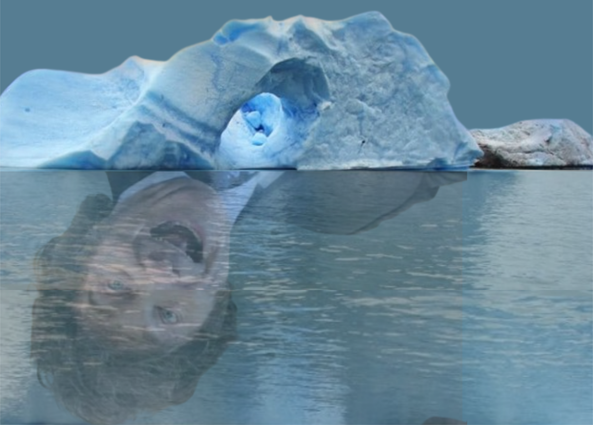
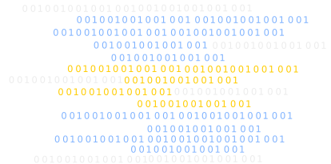

ARTÍCULO DE ACTUALIDAD

ARTÍCULO
Defender los glaciares en Argentina: cuestión de "vida" o "muerte"
Argentina tiene más de 16.000 glaciares, reservas estratégicas de agua dulce. La modificación de la Ley de
Glaciares pone en riesgo la vida en territorios áridos y la justicia ambiental. Casi 1 millón de firmas
acompañan un amparo judicial para frenarlo.
ARTÍCULOS DE LA EDICIÓN

NOTA DE ACTUALIDAD
PRECARIEDAD PROGRAMADA: CÓMO LA REFORMA LABORAL AFECTA AL SECTOR DE INFORMÁTICA
El mundo de sistemas, alguna vez mimado como el futuro del trabajo, enfrenta ahora los embates de una
reforma que precariza derechos. Derribamos mitos y analizamos el impacto real en programadores, analistas
e ingenieros de software.

NOTA DE ACTUALIDAD
¿Con la IVE cómo andamos?
Desde la asunción de Javier Milei, el Ministerio de Salud dejó de producir información sobre el acceso a
la interrupción voluntaria del embarazo. A pesar del desfinanciamiento, la ley sigue vigente y los equipos
de salud la sostienen.

NOTA DE ACTUALIDAD
El código de guerra: : la responsabilidad de las tecnológicas en el horror global y el silencio en las aulas"
Amazon, Google y Palantir son engranajes de la maquinaria de guerra y genocidio. El dieseño de software es
un acto político, pero ¿Quién decide qué tecnología financiamos y con qué criterios? ¿Cómo nos preparamos
para tomar esas decisiones?

ENTREVISTA
El Hospital Garrahan desde adentro: resistencia, ciencia y ajuste
Desde la Gaceta Clara Zetkin entrevistamos a Alejandro Lipcovich, secretario de la Junta Interna de ATE.
El hospital emblema de la salud pública pediátrica Argentina atraviesa un conflicto marcado por el ajuste
presupuestario, el deterioro salarial y las políticas de vaciamiento. Hablamos sobre la lucha del 2025, el
triunfo del aumento del 61%, la contraofensiva del gobierno con sumarios y despidos, y el rol del Garrahan
como espacio de producción científica.

RESEÑA
"Emergencia radiactiva": el desastre no empieza con el cesio, sino con la desigualdad
La serie de Netflix reconstruye el accidente de Goiânia (1987) y muestra que el desastre no comenzó con la
radiación, sino con el abandono, la especulación y la desigualdad en el acceso al conocimiento. Ciencia
pública, participación y territorios periféricos en debate.